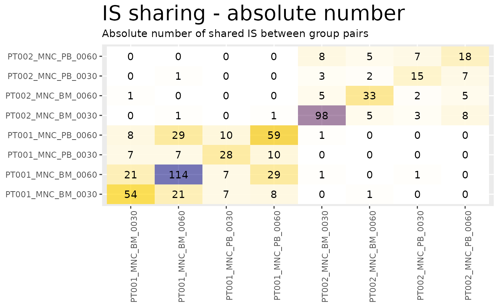
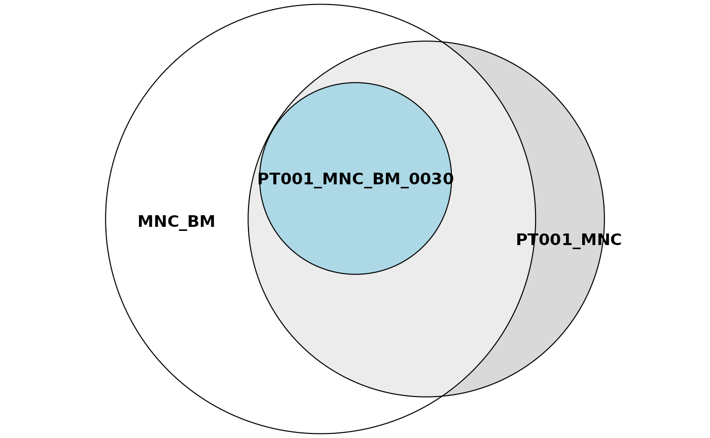

Sharing analyses with ISAnalytics
Giulia Pais
San Raffaele Telethon Institute for Gene Therapy - SR-Tiget, Via Olgettina 60, 20132 Milano - Italia
giuliapais1@gmail.com, calabria.andrea@hsr.it
27 April 2022
Source:vignettes/sharing_analyses.Rmd
sharing_analyses.RmdIntroduction
In this vignette we explain in more detail how to perform sharing analyses with ISAnalytics and its dedicated sharing functions.
Installation and options
ISAnalytics can be installed quickly in different ways:
- You can install it via Bioconductor
- You can install it via GitHub using the package
devtools
There are always 2 versions of the package active:
-
RELEASEis the latest stable version -
DEVELis the development version, it is the most up-to-date version where all new features are introduced
Installation from bioconductor
RELEASE version:
if (!requireNamespace("BiocManager", quietly = TRUE))
install.packages("BiocManager")
BiocManager::install("ISAnalytics")DEVEL version:
if (!requireNamespace("BiocManager", quietly = TRUE))
install.packages("BiocManager")
# The following initializes usage of Bioc devel
BiocManager::install(version='devel')
BiocManager::install("ISAnalytics")Installation from GitHub
RELEASE:
if (!require(devtools)) {
install.packages("devtools")
}
devtools::install_github("calabrialab/ISAnalytics",
ref = "RELEASE_3_15",
dependencies = TRUE,
build_vignettes = TRUE)DEVEL:
if (!require(devtools)) {
install.packages("devtools")
}
devtools::install_github("calabrialab/ISAnalytics",
ref = "master",
dependencies = TRUE,
build_vignettes = TRUE)Shared integration sites
An integration site is always characterized by a triple of values: (chr, integration_locus, strand), hence these attributes are always present in integration matrices.
library(ISAnalytics)
#> Loading required package: magrittr
data("integration_matrices")
data("association_file")#> chr integration_locus strand GeneName GeneStrand
#> 1: 16 68164148 + NFATC3 +
#> 2: 4 129390130 + LOC100507487 +
#> 3: 5 84009671 - EDIL3 -
#> 4: 12 54635693 - CBX5 -
#> 5: 5 84009671 - EDIL3 -
#> 6: 12 54635693 - CBX5 -
#> CompleteAmplificationID
#> 1: PJ01_POOL01_LTR75LC38_PT001_PT001-103_lenti_GLOBE_PB_1_SLiM_0060_MNC
#> 2: PJ01_POOL01_LTR53LC32_PT001_PT001-81_lenti_GLOBE_BM_1_SLiM_0180_MNC
#> 3: PJ01_POOL01_LTR53LC32_PT001_PT001-81_lenti_GLOBE_BM_1_SLiM_0180_MNC
#> 4: PJ01_POOL01_LTR83LC66_PT001_PT001-81_lenti_GLOBE_BM_1_SLiM_0180_MNC
#> 5: PJ01_POOL01_LTR83LC66_PT001_PT001-81_lenti_GLOBE_BM_1_SLiM_0180_MNC
#> 6: PJ01_POOL01_LTR27LC94_PT001_PT001-81_lenti_GLOBE_BM_1_SLiM_0180_MNC
#> seqCount fragmentEstimate
#> 1: 182 102.94572
#> 2: 23219 68.73747
#> 3: 20205 67.12349
#> 4: 13269 65.15760
#> 5: 14748 61.46981
#> 6: 12588 60.84781We can aggregate our data in different ways according to our needs (to know more about this topic take a look at the vignette vignette("workflow_start", package = "ISAnalytics")), obtaining therefore different groups. Each group has an associated set of integration sites.
## Aggregation by standard key
agg <- aggregate_values_by_key(integration_matrices,
association_file,
value_cols = c("seqCount", "fragmentEstimate"))
agg <- agg %>% dplyr::filter(TimePoint %in% c("0030", "0060"))#> # A tibble: 419 × 11
#> chr integration_locus strand GeneName GeneStrand SubjectID CellMarker
#> <chr> <dbl> <chr> <chr> <chr> <chr> <chr>
#> 1 1 8464757 - RERE - PT001 MNC
#> 2 1 8464757 - RERE - PT001 MNC
#> 3 1 8607357 + RERE - PT001 MNC
#> 4 1 11339120 + UBIAD1 + PT001 MNC
#> 5 1 11339120 + UBIAD1 + PT001 MNC
#> 6 1 16186297 - SPEN + PT001 MNC
#> 7 1 16186297 - SPEN + PT001 MNC
#> 8 1 16602483 + FBXO42 - PT001 MNC
#> 9 1 25337264 - MIR4425 + PT002 MNC
#> 10 1 25337264 - MIR4425 + PT002 MNC
#> Tissue TimePoint seqCount_sum fragmentEstimate_sum
#> <chr> <chr> <dbl> <dbl>
#> 1 BM 0030 542 3.01
#> 2 BM 0060 1 1.00
#> 3 BM 0060 1 1.00
#> 4 BM 0060 1605 8.03
#> 5 PB 0060 1 1.00
#> 6 BM 0030 1 1.00
#> 7 PB 0060 1 1.00
#> 8 BM 0060 2947 9.04
#> 9 BM 0030 23 9.14
#> 10 PB 0060 36 7.07
#> # … with 409 more rowsAn integration site is shared between two or more groups if the same triple is observed in all the groups considered.
Automated sharing counts
ISAnalytics provides the function is_sharing() for computing automated sharing counts. The function has several arguments that can be tuned according to user needs.
SCENARIO 1: single input data frame and single grouping key
sharing_1 <- is_sharing(agg,
group_key = c("SubjectID", "CellMarker",
"Tissue", "TimePoint"),
n_comp = 2,
is_count = TRUE,
relative_is_sharing = TRUE,
minimal = TRUE,
include_self_comp = FALSE,
keep_genomic_coord = TRUE)
#> Calculating combinations...
#> Done!
sharing_1
#> g1 g2 shared is_coord count_g1
#> 1: PT001_MNC_BM_0030 PT001_MNC_BM_0060 21 <data.table[21x3]> 54
#> 2: PT001_MNC_BM_0030 PT001_MNC_PB_0060 8 <data.table[8x3]> 54
#> 3: PT001_MNC_BM_0060 PT001_MNC_PB_0060 29 <data.table[29x3]> 114
#> 4: PT001_MNC_PB_0030 PT001_MNC_PB_0060 10 <data.table[10x3]> 28
#> 5: PT001_MNC_BM_0030 PT002_MNC_BM_0030 0 <data.table[0x3]> 54
#> 6: PT001_MNC_BM_0060 PT002_MNC_BM_0030 1 <data.table[1x3]> 114
#> 7: PT001_MNC_PB_0060 PT002_MNC_BM_0030 1 <data.table[1x3]> 59
#> 8: PT001_MNC_PB_0030 PT002_MNC_BM_0030 0 <data.table[0x3]> 28
#> 9: PT001_MNC_BM_0030 PT002_MNC_PB_0060 0 <data.table[0x3]> 54
#> 10: PT001_MNC_BM_0060 PT002_MNC_PB_0060 0 <data.table[0x3]> 114
#> 11: PT001_MNC_PB_0060 PT002_MNC_PB_0060 0 <data.table[0x3]> 59
#> 12: PT002_MNC_BM_0030 PT002_MNC_PB_0060 8 <data.table[8x3]> 98
#> 13: PT002_MNC_PB_0030 PT002_MNC_PB_0060 7 <data.table[7x3]> 15
#> 14: PT001_MNC_PB_0030 PT002_MNC_PB_0060 0 <data.table[0x3]> 28
#> 15: PT002_MNC_BM_0060 PT002_MNC_PB_0060 5 <data.table[5x3]> 33
#> 16: PT001_MNC_BM_0030 PT002_MNC_PB_0030 0 <data.table[0x3]> 54
#> 17: PT001_MNC_BM_0060 PT002_MNC_PB_0030 1 <data.table[1x3]> 114
#> 18: PT001_MNC_PB_0060 PT002_MNC_PB_0030 0 <data.table[0x3]> 59
#> 19: PT002_MNC_BM_0030 PT002_MNC_PB_0030 3 <data.table[3x3]> 98
#> 20: PT001_MNC_PB_0030 PT002_MNC_PB_0030 0 <data.table[0x3]> 28
#> 21: PT002_MNC_BM_0060 PT002_MNC_PB_0030 2 <data.table[2x3]> 33
#> 22: PT001_MNC_BM_0030 PT001_MNC_PB_0030 7 <data.table[7x3]> 54
#> 23: PT001_MNC_BM_0060 PT001_MNC_PB_0030 7 <data.table[7x3]> 114
#> 24: PT001_MNC_BM_0030 PT002_MNC_BM_0060 1 <data.table[1x3]> 54
#> 25: PT001_MNC_BM_0060 PT002_MNC_BM_0060 0 <data.table[0x3]> 114
#> 26: PT001_MNC_PB_0060 PT002_MNC_BM_0060 0 <data.table[0x3]> 59
#> 27: PT002_MNC_BM_0030 PT002_MNC_BM_0060 5 <data.table[5x3]> 98
#> 28: PT001_MNC_PB_0030 PT002_MNC_BM_0060 0 <data.table[0x3]> 28
#> g1 g2 shared is_coord count_g1
#> count_g2 count_union on_g1 on_g2 on_union
#> 1: 114 147 38.888889 18.421053 14.2857143
#> 2: 59 105 14.814815 13.559322 7.6190476
#> 3: 59 144 25.438596 49.152542 20.1388889
#> 4: 59 77 35.714286 16.949153 12.9870130
#> 5: 98 152 0.000000 0.000000 0.0000000
#> 6: 98 211 0.877193 1.020408 0.4739336
#> 7: 98 156 1.694915 1.020408 0.6410256
#> 8: 98 126 0.000000 0.000000 0.0000000
#> 9: 18 72 0.000000 0.000000 0.0000000
#> 10: 18 132 0.000000 0.000000 0.0000000
#> 11: 18 77 0.000000 0.000000 0.0000000
#> 12: 18 108 8.163265 44.444444 7.4074074
#> 13: 18 26 46.666667 38.888889 26.9230769
#> 14: 18 46 0.000000 0.000000 0.0000000
#> 15: 18 46 15.151515 27.777778 10.8695652
#> 16: 15 69 0.000000 0.000000 0.0000000
#> 17: 15 128 0.877193 6.666667 0.7812500
#> 18: 15 74 0.000000 0.000000 0.0000000
#> 19: 15 110 3.061224 20.000000 2.7272727
#> 20: 15 43 0.000000 0.000000 0.0000000
#> 21: 15 46 6.060606 13.333333 4.3478261
#> 22: 28 75 12.962963 25.000000 9.3333333
#> 23: 28 135 6.140351 25.000000 5.1851852
#> 24: 33 86 1.851852 3.030303 1.1627907
#> 25: 33 147 0.000000 0.000000 0.0000000
#> 26: 33 92 0.000000 0.000000 0.0000000
#> 27: 33 126 5.102041 15.151515 3.9682540
#> 28: 33 61 0.000000 0.000000 0.0000000
#> count_g2 count_union on_g1 on_g2 on_unionIn this configuration we set:
- A single input data frame:
agg - A single grouping key by setting the argument
grouping_key. In this specific case, our groups will be identified by a unique combination ofSubjectID,CellMarker,TissueandTimePoint -
n_comprepresents the number of comparisons to compute: 2 means we’re interested in knowing the sharing for PAIRS of distinct groups - We want to keep the counts of distinct integration sites for each group by setting
is_counttoTRUE -
relative_is_sharingif set toTRUEadds sharing expressed as a percentage, more precisely it adds a columnon_g1that is calculated as the absolute number of shared integrations divided by the cardinality of the first group,on_g2is analogous but is computed on the cardinality of the second group and finallyon_unionis computed on the cardinality of the union of the two groups. - By setting the argument
minimaltoTRUEwe tell the function to avoid redundant comparisons: in this way only combinations and not permutations are included in the output table -
include_self_compadds rows in the table that are labelled with the same group: these rows always have a 100% sharing with all other groups. There are few scenarios where this is useful, but for now we set it toFALSEsince we don’t need it -
keep_genomic_coordallows us to keep the genomic coordinates of the shared integration sites as a separate table
Changing the number of comparisons
sharing_1_a <- is_sharing(agg,
group_key = c("SubjectID", "CellMarker",
"Tissue", "TimePoint"),
n_comp = 3,
is_count = TRUE,
relative_is_sharing = TRUE,
minimal = TRUE,
include_self_comp = FALSE,
keep_genomic_coord = TRUE)
#> Calculating combinations...
#> Done!
sharing_1_a
#> g1 g2 g3 shared
#> 1: PT001_MNC_BM_0030 PT001_MNC_BM_0060 PT001_MNC_PB_0060 6
#> 2: PT001_MNC_BM_0030 PT001_MNC_PB_0030 PT001_MNC_PB_0060 1
#> 3: PT001_MNC_BM_0060 PT001_MNC_PB_0030 PT001_MNC_PB_0060 2
#> 4: PT001_MNC_BM_0030 PT001_MNC_BM_0060 PT002_MNC_BM_0030 0
#> 5: PT001_MNC_BM_0030 PT001_MNC_PB_0060 PT002_MNC_BM_0030 0
#> 6: PT001_MNC_BM_0060 PT001_MNC_PB_0060 PT002_MNC_BM_0030 1
#> 7: PT001_MNC_PB_0030 PT001_MNC_PB_0060 PT002_MNC_BM_0030 0
#> 8: PT001_MNC_BM_0030 PT001_MNC_PB_0030 PT002_MNC_BM_0030 0
#> 9: PT001_MNC_BM_0060 PT001_MNC_PB_0030 PT002_MNC_BM_0030 0
#> 10: PT001_MNC_BM_0030 PT001_MNC_BM_0060 PT002_MNC_PB_0060 0
#> 11: PT001_MNC_BM_0030 PT001_MNC_PB_0060 PT002_MNC_PB_0060 0
#> 12: PT001_MNC_BM_0060 PT001_MNC_PB_0060 PT002_MNC_PB_0060 0
#> 13: PT001_MNC_PB_0030 PT001_MNC_PB_0060 PT002_MNC_PB_0060 0
#> 14: PT001_MNC_BM_0030 PT002_MNC_BM_0030 PT002_MNC_PB_0060 0
#> 15: PT001_MNC_BM_0060 PT002_MNC_BM_0030 PT002_MNC_PB_0060 0
#> 16: PT001_MNC_PB_0060 PT002_MNC_BM_0030 PT002_MNC_PB_0060 0
#> 17: PT001_MNC_PB_0030 PT002_MNC_BM_0030 PT002_MNC_PB_0060 0
#> 18: PT001_MNC_BM_0030 PT002_MNC_PB_0030 PT002_MNC_PB_0060 0
#> 19: PT001_MNC_BM_0060 PT002_MNC_PB_0030 PT002_MNC_PB_0060 0
#> 20: PT001_MNC_PB_0060 PT002_MNC_PB_0030 PT002_MNC_PB_0060 0
#> 21: PT002_MNC_BM_0030 PT002_MNC_PB_0030 PT002_MNC_PB_0060 1
#> 22: PT001_MNC_PB_0030 PT002_MNC_PB_0030 PT002_MNC_PB_0060 0
#> 23: PT002_MNC_BM_0060 PT002_MNC_PB_0030 PT002_MNC_PB_0060 1
#> 24: PT001_MNC_BM_0030 PT001_MNC_PB_0030 PT002_MNC_PB_0060 0
#> 25: PT001_MNC_BM_0060 PT001_MNC_PB_0030 PT002_MNC_PB_0060 0
#> 26: PT001_MNC_BM_0030 PT002_MNC_BM_0060 PT002_MNC_PB_0060 0
#> 27: PT001_MNC_BM_0060 PT002_MNC_BM_0060 PT002_MNC_PB_0060 0
#> 28: PT001_MNC_PB_0060 PT002_MNC_BM_0060 PT002_MNC_PB_0060 0
#> 29: PT002_MNC_BM_0030 PT002_MNC_BM_0060 PT002_MNC_PB_0060 1
#> 30: PT001_MNC_PB_0030 PT002_MNC_BM_0060 PT002_MNC_PB_0060 0
#> 31: PT001_MNC_BM_0030 PT001_MNC_BM_0060 PT002_MNC_PB_0030 0
#> 32: PT001_MNC_BM_0030 PT001_MNC_PB_0060 PT002_MNC_PB_0030 0
#> 33: PT001_MNC_BM_0060 PT001_MNC_PB_0060 PT002_MNC_PB_0030 0
#> 34: PT001_MNC_PB_0030 PT001_MNC_PB_0060 PT002_MNC_PB_0030 0
#> 35: PT001_MNC_BM_0030 PT002_MNC_BM_0030 PT002_MNC_PB_0030 0
#> 36: PT001_MNC_BM_0060 PT002_MNC_BM_0030 PT002_MNC_PB_0030 0
#> 37: PT001_MNC_PB_0060 PT002_MNC_BM_0030 PT002_MNC_PB_0030 0
#> 38: PT001_MNC_PB_0030 PT002_MNC_BM_0030 PT002_MNC_PB_0030 0
#> 39: PT001_MNC_BM_0030 PT001_MNC_PB_0030 PT002_MNC_PB_0030 0
#> 40: PT001_MNC_BM_0060 PT001_MNC_PB_0030 PT002_MNC_PB_0030 0
#> 41: PT001_MNC_BM_0030 PT002_MNC_BM_0060 PT002_MNC_PB_0030 0
#> 42: PT001_MNC_BM_0060 PT002_MNC_BM_0060 PT002_MNC_PB_0030 0
#> 43: PT001_MNC_PB_0060 PT002_MNC_BM_0060 PT002_MNC_PB_0030 0
#> 44: PT002_MNC_BM_0030 PT002_MNC_BM_0060 PT002_MNC_PB_0030 1
#> 45: PT001_MNC_PB_0030 PT002_MNC_BM_0060 PT002_MNC_PB_0030 0
#> 46: PT001_MNC_BM_0030 PT001_MNC_BM_0060 PT001_MNC_PB_0030 5
#> 47: PT001_MNC_BM_0030 PT001_MNC_BM_0060 PT002_MNC_BM_0060 0
#> 48: PT001_MNC_BM_0030 PT001_MNC_PB_0060 PT002_MNC_BM_0060 0
#> 49: PT001_MNC_BM_0060 PT001_MNC_PB_0060 PT002_MNC_BM_0060 0
#> 50: PT001_MNC_PB_0030 PT001_MNC_PB_0060 PT002_MNC_BM_0060 0
#> 51: PT001_MNC_BM_0030 PT002_MNC_BM_0030 PT002_MNC_BM_0060 0
#> 52: PT001_MNC_BM_0060 PT002_MNC_BM_0030 PT002_MNC_BM_0060 0
#> 53: PT001_MNC_PB_0060 PT002_MNC_BM_0030 PT002_MNC_BM_0060 0
#> 54: PT001_MNC_PB_0030 PT002_MNC_BM_0030 PT002_MNC_BM_0060 0
#> 55: PT001_MNC_BM_0030 PT001_MNC_PB_0030 PT002_MNC_BM_0060 0
#> 56: PT001_MNC_BM_0060 PT001_MNC_PB_0030 PT002_MNC_BM_0060 0
#> g1 g2 g3 shared
#> is_coord count_g1 count_g2 count_g3 count_union on_g1 on_g2
#> 1: <data.table[6x3]> 54 114 59 175 11.111111 5.263158
#> 2: <data.table[1x3]> 54 28 59 117 1.851852 3.571429
#> 3: <data.table[2x3]> 114 28 59 157 1.754386 7.142857
#> 4: <data.table[0x3]> 54 114 98 244 0.000000 0.000000
#> 5: <data.table[0x3]> 54 59 98 202 0.000000 0.000000
#> 6: <data.table[1x3]> 114 59 98 241 0.877193 1.694915
#> 7: <data.table[0x3]> 28 59 98 174 0.000000 0.000000
#> 8: <data.table[0x3]> 54 28 98 173 0.000000 0.000000
#> 9: <data.table[0x3]> 114 28 98 232 0.000000 0.000000
#> 10: <data.table[0x3]> 54 114 18 165 0.000000 0.000000
#> 11: <data.table[0x3]> 54 59 18 123 0.000000 0.000000
#> 12: <data.table[0x3]> 114 59 18 162 0.000000 0.000000
#> 13: <data.table[0x3]> 28 59 18 95 0.000000 0.000000
#> 14: <data.table[0x3]> 54 98 18 162 0.000000 0.000000
#> 15: <data.table[0x3]> 114 98 18 221 0.000000 0.000000
#> 16: <data.table[0x3]> 59 98 18 166 0.000000 0.000000
#> 17: <data.table[0x3]> 28 98 18 136 0.000000 0.000000
#> 18: <data.table[0x3]> 54 15 18 80 0.000000 0.000000
#> 19: <data.table[0x3]> 114 15 18 139 0.000000 0.000000
#> 20: <data.table[0x3]> 59 15 18 85 0.000000 0.000000
#> 21: <data.table[1x3]> 98 15 18 114 1.020408 6.666667
#> 22: <data.table[0x3]> 28 15 18 54 0.000000 0.000000
#> 23: <data.table[1x3]> 33 15 18 53 3.030303 6.666667
#> 24: <data.table[0x3]> 54 28 18 93 0.000000 0.000000
#> 25: <data.table[0x3]> 114 28 18 153 0.000000 0.000000
#> 26: <data.table[0x3]> 54 33 18 99 0.000000 0.000000
#> 27: <data.table[0x3]> 114 33 18 160 0.000000 0.000000
#> 28: <data.table[0x3]> 59 33 18 105 0.000000 0.000000
#> 29: <data.table[1x3]> 98 33 18 132 1.020408 3.030303
#> 30: <data.table[0x3]> 28 33 18 74 0.000000 0.000000
#> 31: <data.table[0x3]> 54 114 15 161 0.000000 0.000000
#> 32: <data.table[0x3]> 54 59 15 120 0.000000 0.000000
#> 33: <data.table[0x3]> 114 59 15 158 0.000000 0.000000
#> 34: <data.table[0x3]> 28 59 15 92 0.000000 0.000000
#> 35: <data.table[0x3]> 54 98 15 164 0.000000 0.000000
#> 36: <data.table[0x3]> 114 98 15 222 0.000000 0.000000
#> 37: <data.table[0x3]> 59 98 15 168 0.000000 0.000000
#> 38: <data.table[0x3]> 28 98 15 138 0.000000 0.000000
#> 39: <data.table[0x3]> 54 28 15 90 0.000000 0.000000
#> 40: <data.table[0x3]> 114 28 15 149 0.000000 0.000000
#> 41: <data.table[0x3]> 54 33 15 99 0.000000 0.000000
#> 42: <data.table[0x3]> 114 33 15 159 0.000000 0.000000
#> 43: <data.table[0x3]> 59 33 15 105 0.000000 0.000000
#> 44: <data.table[1x3]> 98 33 15 137 1.020408 3.030303
#> 45: <data.table[0x3]> 28 33 15 74 0.000000 0.000000
#> 46: <data.table[5x3]> 54 114 28 166 9.259259 4.385965
#> 47: <data.table[0x3]> 54 114 33 179 0.000000 0.000000
#> 48: <data.table[0x3]> 54 59 33 137 0.000000 0.000000
#> 49: <data.table[0x3]> 114 59 33 177 0.000000 0.000000
#> 50: <data.table[0x3]> 28 59 33 110 0.000000 0.000000
#> 51: <data.table[0x3]> 54 98 33 179 0.000000 0.000000
#> 52: <data.table[0x3]> 114 98 33 239 0.000000 0.000000
#> 53: <data.table[0x3]> 59 98 33 184 0.000000 0.000000
#> 54: <data.table[0x3]> 28 98 33 154 0.000000 0.000000
#> 55: <data.table[0x3]> 54 28 33 107 0.000000 0.000000
#> 56: <data.table[0x3]> 114 28 33 168 0.000000 0.000000
#> is_coord count_g1 count_g2 count_g3 count_union on_g1 on_g2
#> on_g3 on_union
#> 1: 10.169492 3.4285714
#> 2: 1.694915 0.8547009
#> 3: 3.389831 1.2738854
#> 4: 0.000000 0.0000000
#> 5: 0.000000 0.0000000
#> 6: 1.020408 0.4149378
#> 7: 0.000000 0.0000000
#> 8: 0.000000 0.0000000
#> 9: 0.000000 0.0000000
#> 10: 0.000000 0.0000000
#> 11: 0.000000 0.0000000
#> 12: 0.000000 0.0000000
#> 13: 0.000000 0.0000000
#> 14: 0.000000 0.0000000
#> 15: 0.000000 0.0000000
#> 16: 0.000000 0.0000000
#> 17: 0.000000 0.0000000
#> 18: 0.000000 0.0000000
#> 19: 0.000000 0.0000000
#> 20: 0.000000 0.0000000
#> 21: 5.555556 0.8771930
#> 22: 0.000000 0.0000000
#> 23: 5.555556 1.8867925
#> 24: 0.000000 0.0000000
#> 25: 0.000000 0.0000000
#> 26: 0.000000 0.0000000
#> 27: 0.000000 0.0000000
#> 28: 0.000000 0.0000000
#> 29: 5.555556 0.7575758
#> 30: 0.000000 0.0000000
#> 31: 0.000000 0.0000000
#> 32: 0.000000 0.0000000
#> 33: 0.000000 0.0000000
#> 34: 0.000000 0.0000000
#> 35: 0.000000 0.0000000
#> 36: 0.000000 0.0000000
#> 37: 0.000000 0.0000000
#> 38: 0.000000 0.0000000
#> 39: 0.000000 0.0000000
#> 40: 0.000000 0.0000000
#> 41: 0.000000 0.0000000
#> 42: 0.000000 0.0000000
#> 43: 0.000000 0.0000000
#> 44: 6.666667 0.7299270
#> 45: 0.000000 0.0000000
#> 46: 17.857143 3.0120482
#> 47: 0.000000 0.0000000
#> 48: 0.000000 0.0000000
#> 49: 0.000000 0.0000000
#> 50: 0.000000 0.0000000
#> 51: 0.000000 0.0000000
#> 52: 0.000000 0.0000000
#> 53: 0.000000 0.0000000
#> 54: 0.000000 0.0000000
#> 55: 0.000000 0.0000000
#> 56: 0.000000 0.0000000
#> on_g3 on_unionChanging the n_comp to 3 means that we want to calculate the sharing between 3 different groups. Note that the shared column contains the counts of integrations that are shared by ALL groups, which is equivalent to a set intersection.
Beware of the fact that the more comparisons are requested the more time the computation requires.
A case when it is useful to set minimal = FALSE
Setting minimal = FALSE produces all possible permutations of the groups and the corresponding values. In combination with include_self_comp = TRUE, this is useful when we want to know the sharing between pairs of groups and plot results as a heatmap.
sharing_1_b <- is_sharing(agg,
group_key = c("SubjectID", "CellMarker",
"Tissue", "TimePoint"),
n_comp = 2,
is_count = TRUE,
relative_is_sharing = TRUE,
minimal = FALSE,
include_self_comp = TRUE)
#> Calculating combinations...
#> Calculating self groups (requested)...
#> Calculating permutations (requested)...
#> Done!
sharing_1_b
#> g1 g2 shared count_g1 count_g2 count_union
#> 1: PT001_MNC_BM_0030 PT001_MNC_BM_0030 54 54 54 54
#> 2: PT001_MNC_BM_0030 PT001_MNC_BM_0060 21 54 114 147
#> 3: PT001_MNC_BM_0060 PT001_MNC_BM_0030 21 114 54 147
#> 4: PT001_MNC_BM_0060 PT001_MNC_BM_0060 114 114 114 114
#> 5: PT001_MNC_BM_0030 PT001_MNC_PB_0060 8 54 59 105
#> 6: PT001_MNC_PB_0060 PT001_MNC_BM_0030 8 59 54 105
#> 7: PT001_MNC_BM_0060 PT001_MNC_PB_0060 29 114 59 144
#> 8: PT001_MNC_PB_0060 PT001_MNC_BM_0060 29 59 114 144
#> 9: PT001_MNC_PB_0060 PT001_MNC_PB_0060 59 59 59 59
#> 10: PT001_MNC_PB_0030 PT001_MNC_PB_0060 10 28 59 77
#> 11: PT001_MNC_PB_0060 PT001_MNC_PB_0030 10 59 28 77
#> 12: PT001_MNC_BM_0030 PT002_MNC_BM_0030 0 54 98 152
#> 13: PT002_MNC_BM_0030 PT001_MNC_BM_0030 0 98 54 152
#> 14: PT001_MNC_BM_0060 PT002_MNC_BM_0030 1 114 98 211
#> 15: PT002_MNC_BM_0030 PT001_MNC_BM_0060 1 98 114 211
#> 16: PT001_MNC_PB_0060 PT002_MNC_BM_0030 1 59 98 156
#> 17: PT002_MNC_BM_0030 PT001_MNC_PB_0060 1 98 59 156
#> 18: PT002_MNC_BM_0030 PT002_MNC_BM_0030 98 98 98 98
#> 19: PT001_MNC_PB_0030 PT002_MNC_BM_0030 0 28 98 126
#> 20: PT002_MNC_BM_0030 PT001_MNC_PB_0030 0 98 28 126
#> 21: PT001_MNC_BM_0030 PT002_MNC_PB_0060 0 54 18 72
#> 22: PT002_MNC_PB_0060 PT001_MNC_BM_0030 0 18 54 72
#> 23: PT001_MNC_BM_0060 PT002_MNC_PB_0060 0 114 18 132
#> 24: PT002_MNC_PB_0060 PT001_MNC_BM_0060 0 18 114 132
#> 25: PT001_MNC_PB_0060 PT002_MNC_PB_0060 0 59 18 77
#> 26: PT002_MNC_PB_0060 PT001_MNC_PB_0060 0 18 59 77
#> 27: PT002_MNC_BM_0030 PT002_MNC_PB_0060 8 98 18 108
#> 28: PT002_MNC_PB_0060 PT002_MNC_BM_0030 8 18 98 108
#> 29: PT002_MNC_PB_0060 PT002_MNC_PB_0060 18 18 18 18
#> 30: PT002_MNC_PB_0030 PT002_MNC_PB_0060 7 15 18 26
#> 31: PT002_MNC_PB_0060 PT002_MNC_PB_0030 7 18 15 26
#> 32: PT001_MNC_PB_0030 PT002_MNC_PB_0060 0 28 18 46
#> 33: PT002_MNC_PB_0060 PT001_MNC_PB_0030 0 18 28 46
#> 34: PT002_MNC_BM_0060 PT002_MNC_PB_0060 5 33 18 46
#> 35: PT002_MNC_PB_0060 PT002_MNC_BM_0060 5 18 33 46
#> 36: PT001_MNC_BM_0030 PT002_MNC_PB_0030 0 54 15 69
#> 37: PT002_MNC_PB_0030 PT001_MNC_BM_0030 0 15 54 69
#> 38: PT001_MNC_BM_0060 PT002_MNC_PB_0030 1 114 15 128
#> 39: PT002_MNC_PB_0030 PT001_MNC_BM_0060 1 15 114 128
#> 40: PT001_MNC_PB_0060 PT002_MNC_PB_0030 0 59 15 74
#> 41: PT002_MNC_PB_0030 PT001_MNC_PB_0060 0 15 59 74
#> 42: PT002_MNC_BM_0030 PT002_MNC_PB_0030 3 98 15 110
#> 43: PT002_MNC_PB_0030 PT002_MNC_BM_0030 3 15 98 110
#> 44: PT002_MNC_PB_0030 PT002_MNC_PB_0030 15 15 15 15
#> 45: PT001_MNC_PB_0030 PT002_MNC_PB_0030 0 28 15 43
#> 46: PT002_MNC_PB_0030 PT001_MNC_PB_0030 0 15 28 43
#> 47: PT002_MNC_BM_0060 PT002_MNC_PB_0030 2 33 15 46
#> 48: PT002_MNC_PB_0030 PT002_MNC_BM_0060 2 15 33 46
#> 49: PT001_MNC_BM_0030 PT001_MNC_PB_0030 7 54 28 75
#> 50: PT001_MNC_PB_0030 PT001_MNC_BM_0030 7 28 54 75
#> 51: PT001_MNC_BM_0060 PT001_MNC_PB_0030 7 114 28 135
#> 52: PT001_MNC_PB_0030 PT001_MNC_BM_0060 7 28 114 135
#> 53: PT001_MNC_PB_0030 PT001_MNC_PB_0030 28 28 28 28
#> 54: PT001_MNC_BM_0030 PT002_MNC_BM_0060 1 54 33 86
#> 55: PT002_MNC_BM_0060 PT001_MNC_BM_0030 1 33 54 86
#> 56: PT001_MNC_BM_0060 PT002_MNC_BM_0060 0 114 33 147
#> 57: PT002_MNC_BM_0060 PT001_MNC_BM_0060 0 33 114 147
#> 58: PT001_MNC_PB_0060 PT002_MNC_BM_0060 0 59 33 92
#> 59: PT002_MNC_BM_0060 PT001_MNC_PB_0060 0 33 59 92
#> 60: PT002_MNC_BM_0030 PT002_MNC_BM_0060 5 98 33 126
#> 61: PT002_MNC_BM_0060 PT002_MNC_BM_0030 5 33 98 126
#> 62: PT001_MNC_PB_0030 PT002_MNC_BM_0060 0 28 33 61
#> 63: PT002_MNC_BM_0060 PT001_MNC_PB_0030 0 33 28 61
#> 64: PT002_MNC_BM_0060 PT002_MNC_BM_0060 33 33 33 33
#> g1 g2 shared count_g1 count_g2 count_union
#> on_g1 on_g2 on_union
#> 1: 100.000000 100.000000 100.0000000
#> 2: 38.888889 18.421053 14.2857143
#> 3: 18.421053 38.888889 14.2857143
#> 4: 100.000000 100.000000 100.0000000
#> 5: 14.814815 13.559322 7.6190476
#> 6: 13.559322 14.814815 7.6190476
#> 7: 25.438596 49.152542 20.1388889
#> 8: 49.152542 25.438596 20.1388889
#> 9: 100.000000 100.000000 100.0000000
#> 10: 35.714286 16.949153 12.9870130
#> 11: 16.949153 35.714286 12.9870130
#> 12: 0.000000 0.000000 0.0000000
#> 13: 0.000000 0.000000 0.0000000
#> 14: 0.877193 1.020408 0.4739336
#> 15: 1.020408 0.877193 0.4739336
#> 16: 1.694915 1.020408 0.6410256
#> 17: 1.020408 1.694915 0.6410256
#> 18: 100.000000 100.000000 100.0000000
#> 19: 0.000000 0.000000 0.0000000
#> 20: 0.000000 0.000000 0.0000000
#> 21: 0.000000 0.000000 0.0000000
#> 22: 0.000000 0.000000 0.0000000
#> 23: 0.000000 0.000000 0.0000000
#> 24: 0.000000 0.000000 0.0000000
#> 25: 0.000000 0.000000 0.0000000
#> 26: 0.000000 0.000000 0.0000000
#> 27: 8.163265 44.444444 7.4074074
#> 28: 44.444444 8.163265 7.4074074
#> 29: 100.000000 100.000000 100.0000000
#> 30: 46.666667 38.888889 26.9230769
#> 31: 38.888889 46.666667 26.9230769
#> 32: 0.000000 0.000000 0.0000000
#> 33: 0.000000 0.000000 0.0000000
#> 34: 15.151515 27.777778 10.8695652
#> 35: 27.777778 15.151515 10.8695652
#> 36: 0.000000 0.000000 0.0000000
#> 37: 0.000000 0.000000 0.0000000
#> 38: 0.877193 6.666667 0.7812500
#> 39: 6.666667 0.877193 0.7812500
#> 40: 0.000000 0.000000 0.0000000
#> 41: 0.000000 0.000000 0.0000000
#> 42: 3.061224 20.000000 2.7272727
#> 43: 20.000000 3.061224 2.7272727
#> 44: 100.000000 100.000000 100.0000000
#> 45: 0.000000 0.000000 0.0000000
#> 46: 0.000000 0.000000 0.0000000
#> 47: 6.060606 13.333333 4.3478261
#> 48: 13.333333 6.060606 4.3478261
#> 49: 12.962963 25.000000 9.3333333
#> 50: 25.000000 12.962963 9.3333333
#> 51: 6.140351 25.000000 5.1851852
#> 52: 25.000000 6.140351 5.1851852
#> 53: 100.000000 100.000000 100.0000000
#> 54: 1.851852 3.030303 1.1627907
#> 55: 3.030303 1.851852 1.1627907
#> 56: 0.000000 0.000000 0.0000000
#> 57: 0.000000 0.000000 0.0000000
#> 58: 0.000000 0.000000 0.0000000
#> 59: 0.000000 0.000000 0.0000000
#> 60: 5.102041 15.151515 3.9682540
#> 61: 15.151515 5.102041 3.9682540
#> 62: 0.000000 0.000000 0.0000000
#> 63: 0.000000 0.000000 0.0000000
#> 64: 100.000000 100.000000 100.0000000
#> on_g1 on_g2 on_union
heatmaps <- sharing_heatmap(sharing_1_b)The function sharing_heatmap() automatically plots sharing between 2 groups. There are several arguments to this function that allow us to obtain heatmaps for the absolute sharing values or the relative (percentage) values.
heatmaps$absolute
heatmaps$on_g1
heatmaps$on_unionBeware of the fact that calculating all permutations takes longer than calculating only distinct combinations, therefore if you don’t need your results plotted or you have more than 2 groups to compare you should stick with minimal = TRUE and include_self_comp = FALSE.
SCENARIO 2: single input data frame and multiple grouping keys
In the first scenario, groups were homogeneous, that is, they were grouped all with the same key. In this other scenario we want to start with data contained in just one data frame but we want to compare sets of integrations that are grouped differently. To do this we give as input a list of keys through the argument group_keys.
sharing_2 <- is_sharing(agg,
group_keys = list(
g1 = c("SubjectID", "CellMarker",
"Tissue", "TimePoint"),
g2 = c("SubjectID", "CellMarker"),
g3 = c("CellMarker", "Tissue")
))
#> Done!
sharing_2
#> g1 g2 g3 shared count_g1 count_g2 count_g3
#> 1: PT001_MNC_BM_0030 PT001_MNC MNC_BM 54 54 186 271
#> 2: PT001_MNC_BM_0060 PT001_MNC MNC_BM 114 114 186 271
#> 3: PT001_MNC_PB_0060 PT001_MNC MNC_BM 31 59 186 271
#> 4: PT002_MNC_BM_0030 PT001_MNC MNC_BM 1 98 186 271
#> 5: PT002_MNC_PB_0060 PT001_MNC MNC_BM 0 18 186 271
#> 6: PT002_MNC_PB_0030 PT001_MNC MNC_BM 1 15 186 271
#> 7: PT001_MNC_PB_0030 PT001_MNC MNC_BM 9 28 186 271
#> 8: PT002_MNC_BM_0060 PT001_MNC MNC_BM 1 33 186 271
#> 9: PT001_MNC_BM_0030 PT002_MNC MNC_BM 1 54 137 271
#> 10: PT001_MNC_BM_0060 PT002_MNC MNC_BM 2 114 137 271
#> 11: PT001_MNC_PB_0060 PT002_MNC MNC_BM 1 59 137 271
#> 12: PT002_MNC_BM_0030 PT002_MNC MNC_BM 98 98 137 271
#> 13: PT002_MNC_PB_0060 PT002_MNC MNC_BM 12 18 137 271
#> 14: PT002_MNC_PB_0030 PT002_MNC MNC_BM 5 15 137 271
#> 15: PT001_MNC_PB_0030 PT002_MNC MNC_BM 0 28 137 271
#> 16: PT002_MNC_BM_0060 PT002_MNC MNC_BM 33 33 137 271
#> 17: PT001_MNC_BM_0030 PT001_MNC MNC_PB 14 54 186 103
#> 18: PT001_MNC_BM_0060 PT001_MNC MNC_PB 35 114 186 103
#> 19: PT001_MNC_PB_0060 PT001_MNC MNC_PB 59 59 186 103
#> 20: PT002_MNC_BM_0030 PT001_MNC MNC_PB 1 98 186 103
#> 21: PT002_MNC_PB_0060 PT001_MNC MNC_PB 0 18 186 103
#> 22: PT002_MNC_PB_0030 PT001_MNC MNC_PB 1 15 186 103
#> 23: PT001_MNC_PB_0030 PT001_MNC MNC_PB 28 28 186 103
#> 24: PT002_MNC_BM_0060 PT001_MNC MNC_PB 0 33 186 103
#> 25: PT001_MNC_BM_0030 PT002_MNC MNC_PB 0 54 137 103
#> 26: PT001_MNC_BM_0060 PT002_MNC MNC_PB 2 114 137 103
#> 27: PT001_MNC_PB_0060 PT002_MNC MNC_PB 1 59 137 103
#> 28: PT002_MNC_BM_0030 PT002_MNC MNC_PB 11 98 137 103
#> 29: PT002_MNC_PB_0060 PT002_MNC MNC_PB 18 18 137 103
#> 30: PT002_MNC_PB_0030 PT002_MNC MNC_PB 15 15 137 103
#> 31: PT001_MNC_PB_0030 PT002_MNC MNC_PB 0 28 137 103
#> 32: PT002_MNC_BM_0060 PT002_MNC MNC_PB 6 33 137 103
#> g1 g2 g3 shared count_g1 count_g2 count_g3
#> count_union on_g1 on_g2 on_g3 on_union
#> 1: 310 100.000000 29.0322581 19.9261993 17.4193548
#> 2: 310 100.000000 61.2903226 42.0664207 36.7741935
#> 3: 310 52.542373 16.6666667 11.4391144 10.0000000
#> 4: 310 1.020408 0.5376344 0.3690037 0.3225806
#> 5: 316 0.000000 0.0000000 0.0000000 0.0000000
#> 6: 320 6.666667 0.5376344 0.3690037 0.3125000
#> 7: 310 32.142857 4.8387097 3.3210332 2.9032258
#> 8: 310 3.030303 0.5376344 0.3690037 0.3225806
#> 9: 281 1.851852 0.7299270 0.3690037 0.3558719
#> 10: 281 1.754386 1.4598540 0.7380074 0.7117438
#> 11: 309 1.694915 0.7299270 0.3690037 0.3236246
#> 12: 281 100.000000 71.5328467 36.1623616 34.8754448
#> 13: 281 66.666667 8.7591241 4.4280443 4.2704626
#> 14: 281 33.333333 3.6496350 1.8450185 1.7793594
#> 15: 300 0.000000 0.0000000 0.0000000 0.0000000
#> 16: 281 100.000000 24.0875912 12.1771218 11.7437722
#> 17: 211 25.925926 7.5268817 13.5922330 6.6350711
#> 18: 211 30.701754 18.8172043 33.9805825 16.5876777
#> 19: 211 100.000000 31.7204301 57.2815534 27.9620853
#> 20: 298 1.020408 0.5376344 0.9708738 0.3355705
#> 21: 211 0.000000 0.0000000 0.0000000 0.0000000
#> 22: 211 6.666667 0.5376344 0.9708738 0.4739336
#> 23: 211 100.000000 15.0537634 27.1844660 13.2701422
#> 24: 237 0.000000 0.0000000 0.0000000 0.0000000
#> 25: 252 0.000000 0.0000000 0.0000000 0.0000000
#> 26: 292 1.754386 1.4598540 1.9417476 0.6849315
#> 27: 213 1.694915 0.7299270 0.9708738 0.4694836
#> 28: 213 11.224490 8.0291971 10.6796117 5.1643192
#> 29: 213 100.000000 13.1386861 17.4757282 8.4507042
#> 30: 213 100.000000 10.9489051 14.5631068 7.0422535
#> 31: 213 0.000000 0.0000000 0.0000000 0.0000000
#> 32: 213 18.181818 4.3795620 5.8252427 2.8169014
#> count_union on_g1 on_g2 on_g3 on_unionThere are a few things to keep in mind in this case:
- The arguments
group_key(notice the absence of plural),n_compandinclude_self_compare ignored: the number of comparisons is automatically detected by counting the provided keys and a self comparison doesn’t make sense since group labels are different - If you provide a list of identical keys or just one key you fall back to scenario 1
SCENARIO 3: multiple input data frame and single grouping key
Providing multiple input data frames and the same grouping key is an effective way to reduce the number of comparisons performed. Let’s make an example: suppose we’re interested in comparing groups labelled by a unique combination of SubjectID, CellMarker, Tissue and TimePoint, but this time we want the first group to contain only integrations relative to PT001_MNC_BM_0030 and the second group to contain only integrations relative to PT001_MNC_BM_0060.
We’re going to filter the original data frame in order to obtain only relevant data in 2 separated tables and then proceed by calling the function.
first_sample <- agg %>%
dplyr::filter(SubjectID == "PT001", CellMarker == "MNC", Tissue == "BM",
TimePoint == "0030")
second_sample <- agg %>%
dplyr::filter(SubjectID == "PT001", CellMarker == "MNC", Tissue == "BM",
TimePoint == "0060")
sharing_3 <- is_sharing(first_sample, second_sample,
group_key = c("SubjectID", "CellMarker",
"Tissue", "TimePoint"),
is_count = TRUE,
relative_is_sharing = TRUE,
minimal = TRUE)
#> Done!
sharing_3
#> g1 g2 shared count_g1 count_g2 count_union
#> 1: PT001_MNC_BM_0030 PT001_MNC_BM_0060 21 54 114 147
#> on_g1 on_g2 on_union
#> 1: 38.88889 18.42105 14.28571Once again the arguments n_comp and include_self_comp are ignored: the number of comparisons is equal to the number of data frames in input.
SCENARIO 4: multiple input data frame and multiple grouping keys
Finally, the most general scenario is when we have multiple data frames with multiple keys. In this case the number of data frames must be equal to the number of provided keys and grouping keys are applied in order ( data frame 1 is grouped with key 1, data frame 2 is grouped with key 2, and so on).
df1 <- agg %>%
dplyr::filter(TimePoint == "0030")
df2 <- agg %>%
dplyr::filter(TimePoint == "0060")
df3 <- agg %>%
dplyr::filter(Tissue == "BM")
keys <- list(g1 = c("SubjectID", "CellMarker", "Tissue"),
g2 = c("SubjectID", "Tissue"),
g3 = c("SubjectID", "CellMarker", "Tissue"))
sharing_4 <- is_sharing(df1, df2, df3, group_keys = keys)
#> Done!
sharing_4
#> g1 g2 g3 shared count_g1 count_g2 count_g3
#> 1: PT001_MNC_BM PT001_BM PT001_MNC_BM 21 54 114 147
#> 2: PT002_MNC_BM PT001_BM PT001_MNC_BM 0 98 114 147
#> 3: PT002_MNC_PB PT001_BM PT001_MNC_BM 0 15 114 147
#> 4: PT001_MNC_PB PT001_BM PT001_MNC_BM 5 28 114 147
#> 5: PT001_MNC_BM PT001_PB PT001_MNC_BM 8 54 59 147
#> 6: PT002_MNC_BM PT001_PB PT001_MNC_BM 0 98 59 147
#> 7: PT002_MNC_PB PT001_PB PT001_MNC_BM 0 15 59 147
#> 8: PT001_MNC_PB PT001_PB PT001_MNC_BM 1 28 59 147
#> 9: PT001_MNC_BM PT002_PB PT001_MNC_BM 0 54 18 147
#> 10: PT002_MNC_BM PT002_PB PT001_MNC_BM 0 98 18 147
#> 11: PT002_MNC_PB PT002_PB PT001_MNC_BM 0 15 18 147
#> 12: PT001_MNC_PB PT002_PB PT001_MNC_BM 0 28 18 147
#> 13: PT001_MNC_BM PT002_BM PT001_MNC_BM 1 54 33 147
#> 14: PT002_MNC_BM PT002_BM PT001_MNC_BM 0 98 33 147
#> 15: PT002_MNC_PB PT002_BM PT001_MNC_BM 0 15 33 147
#> 16: PT001_MNC_PB PT002_BM PT001_MNC_BM 0 28 33 147
#> 17: PT001_MNC_BM PT001_BM PT002_MNC_BM 0 54 114 126
#> 18: PT002_MNC_BM PT001_BM PT002_MNC_BM 1 98 114 126
#> 19: PT002_MNC_PB PT001_BM PT002_MNC_BM 0 15 114 126
#> 20: PT001_MNC_PB PT001_BM PT002_MNC_BM 0 28 114 126
#> 21: PT001_MNC_BM PT001_PB PT002_MNC_BM 0 54 59 126
#> 22: PT002_MNC_BM PT001_PB PT002_MNC_BM 1 98 59 126
#> 23: PT002_MNC_PB PT001_PB PT002_MNC_BM 0 15 59 126
#> 24: PT001_MNC_PB PT001_PB PT002_MNC_BM 0 28 59 126
#> 25: PT001_MNC_BM PT002_PB PT002_MNC_BM 0 54 18 126
#> 26: PT002_MNC_BM PT002_PB PT002_MNC_BM 8 98 18 126
#> 27: PT002_MNC_PB PT002_PB PT002_MNC_BM 1 15 18 126
#> 28: PT001_MNC_PB PT002_PB PT002_MNC_BM 0 28 18 126
#> 29: PT001_MNC_BM PT002_BM PT002_MNC_BM 0 54 33 126
#> 30: PT002_MNC_BM PT002_BM PT002_MNC_BM 5 98 33 126
#> 31: PT002_MNC_PB PT002_BM PT002_MNC_BM 1 15 33 126
#> 32: PT001_MNC_PB PT002_BM PT002_MNC_BM 0 28 33 126
#> g1 g2 g3 shared count_g1 count_g2 count_g3
#> count_union on_g1 on_g2 on_g3 on_union
#> 1: 147 38.888889 18.421053 14.2857143 14.2857143
#> 2: 271 0.000000 0.000000 0.0000000 0.0000000
#> 3: 161 0.000000 0.000000 0.0000000 0.0000000
#> 4: 166 17.857143 4.385965 3.4013605 3.0120482
#> 5: 175 14.814815 13.559322 5.4421769 4.5714286
#> 6: 299 0.000000 0.000000 0.0000000 0.0000000
#> 7: 189 0.000000 0.000000 0.0000000 0.0000000
#> 8: 186 3.571429 1.694915 0.6802721 0.5376344
#> 9: 165 0.000000 0.000000 0.0000000 0.0000000
#> 10: 277 0.000000 0.000000 0.0000000 0.0000000
#> 11: 172 0.000000 0.000000 0.0000000 0.0000000
#> 12: 184 0.000000 0.000000 0.0000000 0.0000000
#> 13: 179 1.851852 3.030303 0.6802721 0.5586592
#> 14: 271 0.000000 0.000000 0.0000000 0.0000000
#> 15: 191 0.000000 0.000000 0.0000000 0.0000000
#> 16: 198 0.000000 0.000000 0.0000000 0.0000000
#> 17: 271 0.000000 0.000000 0.0000000 0.0000000
#> 18: 239 1.020408 0.877193 0.7936508 0.4184100
#> 19: 249 0.000000 0.000000 0.0000000 0.0000000
#> 20: 260 0.000000 0.000000 0.0000000 0.0000000
#> 21: 299 0.000000 0.000000 0.0000000 0.0000000
#> 22: 184 1.020408 1.694915 0.7936508 0.5434783
#> 23: 195 0.000000 0.000000 0.0000000 0.0000000
#> 24: 202 0.000000 0.000000 0.0000000 0.0000000
#> 25: 277 0.000000 0.000000 0.0000000 0.0000000
#> 26: 132 8.163265 44.444444 6.3492063 6.0606061
#> 27: 137 6.666667 5.555556 0.7936508 0.7299270
#> 28: 160 0.000000 0.000000 0.0000000 0.0000000
#> 29: 271 0.000000 0.000000 0.0000000 0.0000000
#> 30: 126 5.102041 15.151515 3.9682540 3.9682540
#> 31: 137 6.666667 3.030303 0.7936508 0.7299270
#> 32: 154 0.000000 0.000000 0.0000000 0.0000000
#> count_union on_g1 on_g2 on_g3 on_unionNotice that in this example the keys for g1 and g3 are the same, meaning the labels of the groups are actually the same, however you should remember that the groups contain a different set of integration sites since they come from different data frames.
Plotting sharing results
When we have more than 2 comparisons it is convenient to plot them as venn or euler diagrams. ISAnalytics has a fast way to do that through the functions is_sharing() and sharing_venn().
sharing_5 <- is_sharing(agg,
group_keys = list(
g1 = c("SubjectID", "CellMarker",
"Tissue", "TimePoint"),
g2 = c("SubjectID", "CellMarker"),
g3 = c("CellMarker", "Tissue")
), table_for_venn = TRUE)
#> Done!
sharing_5
#> g1 g2 g3 shared count_g1 count_g2 count_g3
#> 1: PT001_MNC_BM_0030 PT001_MNC MNC_BM 54 54 186 271
#> 2: PT001_MNC_BM_0060 PT001_MNC MNC_BM 114 114 186 271
#> 3: PT001_MNC_PB_0060 PT001_MNC MNC_BM 31 59 186 271
#> 4: PT002_MNC_BM_0030 PT001_MNC MNC_BM 1 98 186 271
#> 5: PT002_MNC_PB_0060 PT001_MNC MNC_BM 0 18 186 271
#> 6: PT002_MNC_PB_0030 PT001_MNC MNC_BM 1 15 186 271
#> 7: PT001_MNC_PB_0030 PT001_MNC MNC_BM 9 28 186 271
#> 8: PT002_MNC_BM_0060 PT001_MNC MNC_BM 1 33 186 271
#> 9: PT001_MNC_BM_0030 PT002_MNC MNC_BM 1 54 137 271
#> 10: PT001_MNC_BM_0060 PT002_MNC MNC_BM 2 114 137 271
#> 11: PT001_MNC_PB_0060 PT002_MNC MNC_BM 1 59 137 271
#> 12: PT002_MNC_BM_0030 PT002_MNC MNC_BM 98 98 137 271
#> 13: PT002_MNC_PB_0060 PT002_MNC MNC_BM 12 18 137 271
#> 14: PT002_MNC_PB_0030 PT002_MNC MNC_BM 5 15 137 271
#> 15: PT001_MNC_PB_0030 PT002_MNC MNC_BM 0 28 137 271
#> 16: PT002_MNC_BM_0060 PT002_MNC MNC_BM 33 33 137 271
#> 17: PT001_MNC_BM_0030 PT001_MNC MNC_PB 14 54 186 103
#> 18: PT001_MNC_BM_0060 PT001_MNC MNC_PB 35 114 186 103
#> 19: PT001_MNC_PB_0060 PT001_MNC MNC_PB 59 59 186 103
#> 20: PT002_MNC_BM_0030 PT001_MNC MNC_PB 1 98 186 103
#> 21: PT002_MNC_PB_0060 PT001_MNC MNC_PB 0 18 186 103
#> 22: PT002_MNC_PB_0030 PT001_MNC MNC_PB 1 15 186 103
#> 23: PT001_MNC_PB_0030 PT001_MNC MNC_PB 28 28 186 103
#> 24: PT002_MNC_BM_0060 PT001_MNC MNC_PB 0 33 186 103
#> 25: PT001_MNC_BM_0030 PT002_MNC MNC_PB 0 54 137 103
#> 26: PT001_MNC_BM_0060 PT002_MNC MNC_PB 2 114 137 103
#> 27: PT001_MNC_PB_0060 PT002_MNC MNC_PB 1 59 137 103
#> 28: PT002_MNC_BM_0030 PT002_MNC MNC_PB 11 98 137 103
#> 29: PT002_MNC_PB_0060 PT002_MNC MNC_PB 18 18 137 103
#> 30: PT002_MNC_PB_0030 PT002_MNC MNC_PB 15 15 137 103
#> 31: PT001_MNC_PB_0030 PT002_MNC MNC_PB 0 28 137 103
#> 32: PT002_MNC_BM_0060 PT002_MNC MNC_PB 6 33 137 103
#> g1 g2 g3 shared count_g1 count_g2 count_g3
#> count_union on_g1 on_g2 on_g3 on_union truth_tbl_venn
#> 1: 310 100.000000 29.0322581 19.9261993 17.4193548 <data.table[310x4]>
#> 2: 310 100.000000 61.2903226 42.0664207 36.7741935 <data.table[310x4]>
#> 3: 310 52.542373 16.6666667 11.4391144 10.0000000 <data.table[310x4]>
#> 4: 310 1.020408 0.5376344 0.3690037 0.3225806 <data.table[310x4]>
#> 5: 316 0.000000 0.0000000 0.0000000 0.0000000 <data.table[316x4]>
#> 6: 320 6.666667 0.5376344 0.3690037 0.3125000 <data.table[320x4]>
#> 7: 310 32.142857 4.8387097 3.3210332 2.9032258 <data.table[310x4]>
#> 8: 310 3.030303 0.5376344 0.3690037 0.3225806 <data.table[310x4]>
#> 9: 281 1.851852 0.7299270 0.3690037 0.3558719 <data.table[281x4]>
#> 10: 281 1.754386 1.4598540 0.7380074 0.7117438 <data.table[281x4]>
#> 11: 309 1.694915 0.7299270 0.3690037 0.3236246 <data.table[309x4]>
#> 12: 281 100.000000 71.5328467 36.1623616 34.8754448 <data.table[281x4]>
#> 13: 281 66.666667 8.7591241 4.4280443 4.2704626 <data.table[281x4]>
#> 14: 281 33.333333 3.6496350 1.8450185 1.7793594 <data.table[281x4]>
#> 15: 300 0.000000 0.0000000 0.0000000 0.0000000 <data.table[300x4]>
#> 16: 281 100.000000 24.0875912 12.1771218 11.7437722 <data.table[281x4]>
#> 17: 211 25.925926 7.5268817 13.5922330 6.6350711 <data.table[211x4]>
#> 18: 211 30.701754 18.8172043 33.9805825 16.5876777 <data.table[211x4]>
#> 19: 211 100.000000 31.7204301 57.2815534 27.9620853 <data.table[211x4]>
#> 20: 298 1.020408 0.5376344 0.9708738 0.3355705 <data.table[298x4]>
#> 21: 211 0.000000 0.0000000 0.0000000 0.0000000 <data.table[211x4]>
#> 22: 211 6.666667 0.5376344 0.9708738 0.4739336 <data.table[211x4]>
#> 23: 211 100.000000 15.0537634 27.1844660 13.2701422 <data.table[211x4]>
#> 24: 237 0.000000 0.0000000 0.0000000 0.0000000 <data.table[237x4]>
#> 25: 252 0.000000 0.0000000 0.0000000 0.0000000 <data.table[252x4]>
#> 26: 292 1.754386 1.4598540 1.9417476 0.6849315 <data.table[292x4]>
#> 27: 213 1.694915 0.7299270 0.9708738 0.4694836 <data.table[213x4]>
#> 28: 213 11.224490 8.0291971 10.6796117 5.1643192 <data.table[213x4]>
#> 29: 213 100.000000 13.1386861 17.4757282 8.4507042 <data.table[213x4]>
#> 30: 213 100.000000 10.9489051 14.5631068 7.0422535 <data.table[213x4]>
#> 31: 213 0.000000 0.0000000 0.0000000 0.0000000 <data.table[213x4]>
#> 32: 213 18.181818 4.3795620 5.8252427 2.8169014 <data.table[213x4]>
#> count_union on_g1 on_g2 on_g3 on_union truth_tbl_vennThe argument table_for_venn = TRUE will add a new column truth_tbl_venn that contains corresponding truth tables for each row.
sharing_plots1 <- sharing_venn(sharing_5, row_range = 1, euler = TRUE)
sharing_plots2 <- sharing_venn(sharing_5, row_range = 1, euler = FALSE)Say that we’re interested in plotting just the first row of our sharing data frame. Then we can call the function sharing_venn and specify in the row_range argument the index 1. Note that this function requires the package eulerr to work. The argument euler indicates if the function should produce euler or venn diagrams instead.
Once obtained the lists of euler/venn objects we can plot them by simply calling the function plot():
plot(sharing_plots1[[1]])
plot(sharing_plots2[[1]])There are several options that can be set, for this please refer to eulerr docs.
Reproducibility
R session information.
#> ─ Session info ───────────────────────────────────────────────────────────────────────────────────────────────────────
#> setting value
#> version R version 4.2.0 (2022-04-22)
#> os Ubuntu 20.04.4 LTS
#> system x86_64, linux-gnu
#> ui X11
#> language en
#> collate C.UTF-8
#> ctype C.UTF-8
#> tz UTC
#> date 2022-04-27
#> pandoc 2.14.2 @ /usr/bin/ (via rmarkdown)
#>
#> ─ Packages ───────────────────────────────────────────────────────────────────────────────────────────────────────────
#> package * version date (UTC) lib source
#> BiocManager 1.30.17 2022-04-22 [1] RSPM
#> BiocParallel 1.29.21 2022-04-19 [1] Bioconductor
#> BiocStyle * 2.23.1 2021-12-17 [1] Bioconductor
#> bookdown 0.26 2022-04-15 [1] RSPM
#> bslib 0.3.1 2021-10-06 [1] RSPM
#> cachem 1.0.6 2021-08-19 [1] RSPM
#> cellranger 1.1.0 2016-07-27 [1] RSPM
#> cli 3.3.0 2022-04-25 [1] RSPM
#> colorspace 2.0-3 2022-02-21 [1] RSPM
#> crayon 1.5.1 2022-03-26 [1] RSPM
#> curl 4.3.2 2021-06-23 [1] RSPM
#> data.table 1.14.2 2021-09-27 [1] RSPM
#> datamods 1.3.0 2022-04-25 [1] RSPM
#> desc 1.4.1 2022-03-06 [1] RSPM
#> digest 0.6.29 2021-12-01 [1] RSPM
#> dplyr 1.0.8 2022-02-08 [1] RSPM
#> ellipsis 0.3.2 2021-04-29 [1] RSPM
#> eulerr 6.1.1 2021-09-06 [1] RSPM
#> evaluate 0.15 2022-02-18 [1] RSPM
#> fansi 1.0.3 2022-03-24 [1] RSPM
#> farver 2.1.0 2021-02-28 [1] RSPM
#> fastmap 1.1.0 2021-01-25 [1] RSPM
#> forcats 0.5.1 2021-01-27 [1] RSPM
#> foreign 0.8-82 2022-01-16 [2] CRAN (R 4.2.0)
#> fs 1.5.2 2021-12-08 [1] RSPM
#> generics 0.1.2 2022-01-31 [1] RSPM
#> ggplot2 3.3.5 2021-06-25 [1] RSPM
#> glue 1.6.2 2022-02-24 [1] RSPM
#> gtable 0.3.0 2019-03-25 [1] RSPM
#> gtools 3.9.2 2021-06-06 [1] RSPM
#> haven 2.5.0 2022-04-15 [1] RSPM
#> highr 0.9 2021-04-16 [1] RSPM
#> hms 1.1.1 2021-09-26 [1] RSPM
#> htmltools 0.5.2 2021-08-25 [1] RSPM
#> httpuv 1.6.5 2022-01-05 [1] RSPM
#> httr 1.4.2 2020-07-20 [1] RSPM
#> ISAnalytics * 1.6.0 2022-04-27 [1] Bioconductor
#> jquerylib 0.1.4 2021-04-26 [1] RSPM
#> jsonlite 1.8.0 2022-02-22 [1] RSPM
#> knitr 1.39 2022-04-26 [1] CRAN (R 4.2.0)
#> later 1.3.0 2021-08-18 [1] RSPM
#> lifecycle 1.0.1 2021-09-24 [1] RSPM
#> lubridate 1.8.0 2021-10-07 [1] RSPM
#> magrittr * 2.0.3 2022-03-30 [1] RSPM
#> memoise 2.0.1 2021-11-26 [1] RSPM
#> mime 0.12 2021-09-28 [1] RSPM
#> munsell 0.5.0 2018-06-12 [1] RSPM
#> openxlsx 4.2.5 2021-12-14 [1] RSPM
#> pillar 1.7.0 2022-02-01 [1] RSPM
#> pkgconfig 2.0.3 2019-09-22 [1] RSPM
#> pkgdown 2.0.3 2022-04-24 [1] any (@2.0.3)
#> plyr 1.8.7 2022-03-24 [1] RSPM
#> polyclip 1.10-0 2019-03-14 [1] RSPM
#> polylabelr 0.2.0 2020-04-19 [1] RSPM
#> promises 1.2.0.1 2021-02-11 [1] RSPM
#> purrr 0.3.4 2020-04-17 [1] RSPM
#> R6 2.5.1 2021-08-19 [1] RSPM
#> ragg 1.2.2 2022-02-21 [1] RSPM
#> Rcapture 1.4-3 2019-12-16 [1] RSPM
#> Rcpp 1.0.8.3 2022-03-17 [1] RSPM
#> readr 2.1.2 2022-01-30 [1] RSPM
#> readxl 1.4.0 2022-03-28 [1] RSPM
#> RefManageR * 1.3.0 2020-11-13 [1] RSPM
#> rio 0.5.29 2021-11-22 [1] RSPM
#> rlang 1.0.2 2022-03-04 [1] RSPM
#> rmarkdown 2.14 2022-04-25 [1] RSPM
#> rprojroot 2.0.3 2022-04-02 [1] RSPM
#> sass 0.4.1 2022-03-23 [1] RSPM
#> scales 1.2.0 2022-04-13 [1] RSPM
#> sessioninfo * 1.2.2 2021-12-06 [1] any (@1.2.2)
#> shiny 1.7.1 2021-10-02 [1] RSPM
#> shinyWidgets 0.6.4 2022-02-06 [1] RSPM
#> stringi 1.7.6 2021-11-29 [1] RSPM
#> stringr 1.4.0 2019-02-10 [1] RSPM
#> systemfonts 1.0.4 2022-02-11 [1] RSPM
#> textshaping 0.3.6 2021-10-13 [1] RSPM
#> tibble 3.1.6 2021-11-07 [1] RSPM
#> tidyr 1.2.0 2022-02-01 [1] RSPM
#> tidyselect 1.1.2 2022-02-21 [1] RSPM
#> tzdb 0.3.0 2022-03-28 [1] RSPM
#> utf8 1.2.2 2021-07-24 [1] RSPM
#> vctrs 0.4.1 2022-04-13 [1] RSPM
#> xfun 0.30 2022-03-02 [1] RSPM
#> xml2 1.3.3 2021-11-30 [1] RSPM
#> xtable 1.8-4 2019-04-21 [1] RSPM
#> yaml 2.3.5 2022-02-21 [1] RSPM
#> zip 2.2.0 2021-05-31 [1] RSPM
#>
#> [1] /home/runner/work/_temp/Library
#> [2] /opt/R/4.2.0/lib/R/library
#>
#> ──────────────────────────────────────────────────────────────────────────────────────────────────────────────────────Bibliography
This vignette was generated using BiocStyle (Oleś, 2021) with knitr (Xie, 2022) and rmarkdown (Allaire, Xie, McPherson, Luraschi, Ushey, Atkins, Wickham, Cheng, Chang, and Iannone, 2022) running behind the scenes.
Citations made with RefManageR (McLean, 2017).
[1] J. Allaire, Y. Xie, J. McPherson, et al. rmarkdown: Dynamic Documents for R. R package version 2.14. 2022. URL: https://github.com/rstudio/rmarkdown.
[2] M. W. McLean. “RefManageR: Import and Manage BibTeX and BibLaTeX References in R”. In: The Journal of Open Source Software (2017). DOI: 10.21105/joss.00338.
[3] A. Oleś. BiocStyle: Standard styles for vignettes and other Bioconductor documents. R package version 2.23.1. 2021. URL: https://github.com/Bioconductor/BiocStyle.
[4] Y. Xie. knitr: A General-Purpose Package for Dynamic Report Generation in R. R package version 1.39. 2022. URL: https://yihui.org/knitr/.